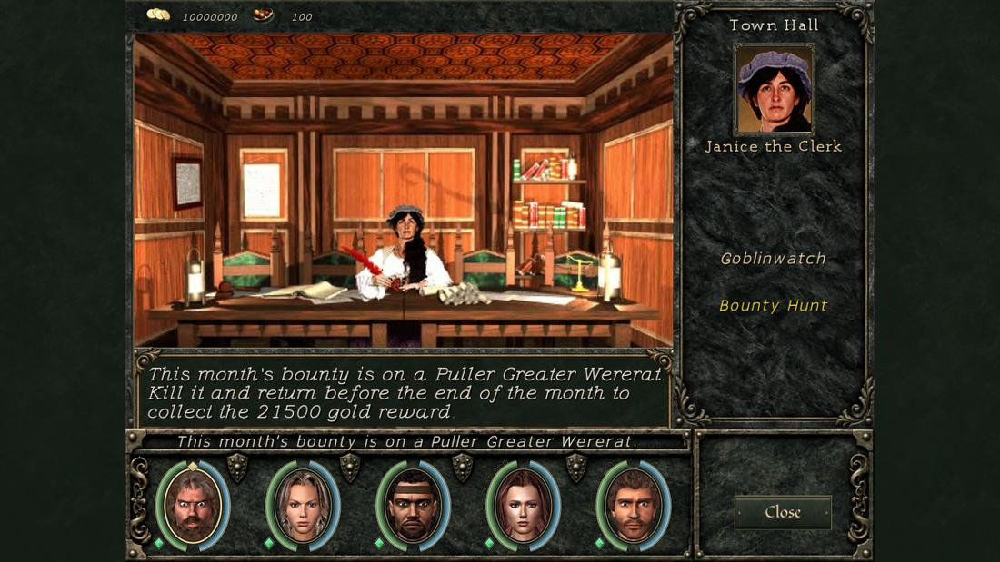
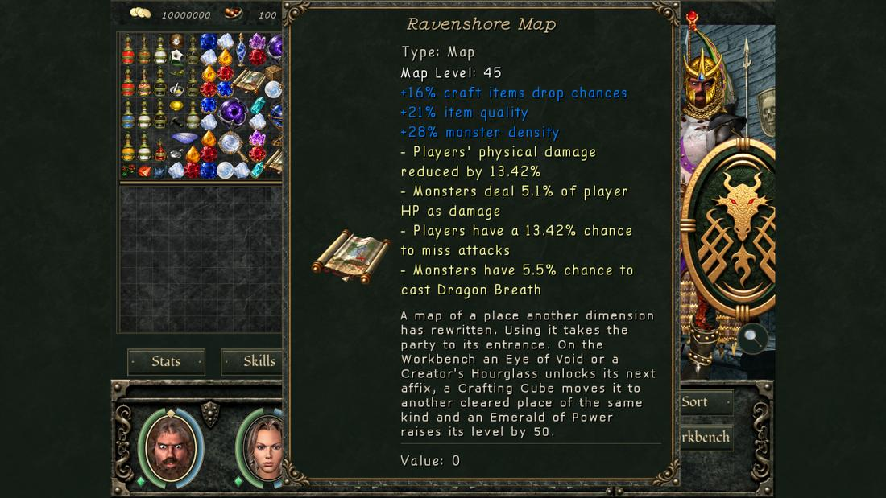

Every map has a level band: three numbers, the level its weakest, middle and strongest native monster family is pinned to (for example Ravenshore 14 / 14 / 17). The experience you earn is also banked on the continent where you earn it, so your banks add up to about your party's level. The journal's Progress tab shows each continent's bank. The progression mode decides what the banks do to monster levels.
| Free (default) | Horizontal | |
|---|---|---|
| Idea | Play one continent from start to end, then the next one, which rises to meet you | The whole merged world is one ladder; travel to whichever continent has maps at your level |
| Monster level on a map | Its band, plus the levels banked on the other continents minus 4 (above level 100 a banked level adds a little less) | Fixed: about 2.5 × the band's average, minus 9. Your banks change nothing |
| The continent you are on | Never scales to you: its maps keep their bands, 1–100 | Its maps run from about 5 to 240 |
| Starter maps | Their band | Their band with nothing banked elsewhere; banked levels lift them, at most to 2.5 × the band |
| Expert / Master / Grandmaster need | skill 4 / 7 / 10 | skill 6 / 12 / 20 |
| Map completion experience | × 1 | × 3 |
| Completion gem tier | from the band | from 3 × the band (better gems) |
| Switching | Allowed during play, both ways (not in Beyond Madness, which is always Horizontal). Masteries you no longer qualify for switch off and come back when you qualify again | |
The mastery rule covers weapons, armour, Shield, the magic schools, the racial abilities, Bodybuilding, Meditation, Regeneration, Dodging, Unarmed, Armsmaster and Ascension. Identify Item, Merchant, Repair, Perception, Disarm Traps, Identify Monster, Stealing and Alchemy keep 4 / 7 / 10 in every mode. Doom uses 6 / 12 / 20 even in Free.
Starter maps (Horizontal): New Sorpigal, Goblinwatch, The Abandoned Temple (Enroth); Emerald Island, The Temple of the Moon, The Dragon's Lair, Castle Harmondale (Antagarich); Dagger Wound Island, Abandoned Temple (Jadame); Ravensford, Isle of Ashes, Beet Hoven, Anskram Keep (Chedian).
Numbers are the native families' normal (middle-tier) monsters, from the bands in the game's data and the game's own level formula. Bosses and the strong tier sit above them.
A new party starts on Jadame. Nothing is banked elsewhere, so every map is just its band:
| Map | Band | Monsters |
|---|---|---|
| Dagger Wound Island | 3 / 4 / 4 | 3–4 |
| Ravenshore | 14 / 14 / 17 | 14–17 |
| Alvar | 21 / 24 / 35 | 21–35 |
| Garrote Gorge | 38 / 45 / 50 | 38–50 |
| Escaton's Crystal | 70 / 80 / 90 | 70–90 |
100 levels are banked on Enroth, so every Jadame map gains 100 − 4 = 96 levels on top of its band:
| Map | Monsters |
|---|---|
| Dagger Wound Island | 99–100 |
| Ravenshore | 110–112 |
| Alvar | 116–128 |
| Garrote Gorge | 130–139 |
| Escaton's Crystal | 154–168 |
Jadame's first island is a fair fight for a level-100 party, and the continent climbs from there. Above level 100 the bonus shrinks a little (Escaton's Crystal gets about +80, not +96), because experience per level grows faster there.
| Map | Monsters | For a level-100 party |
|---|---|---|
| Dagger Wound Island (starter) | 8–10 | trivial: banks lift it only to 2.5 × its band |
| Ravenshore | 28–31 | far below |
| Alvar | 52–66 | below |
| Garrote Gorge | 96–108 | right |
| Escaton's Crystal | 181–201 | far above |
So at 100 you go to Garrote Gorge (or the maps of the other continents at the same level), not to Jadame's start.
Coming back, Enroth's maps gain what you banked elsewhere: the 80 levels earned on Jadame, minus 4. Free Haven (band 6 / 12.5 / 19) is now 82–95 and Icewind Keep (20 / 23 / 26) 96–102: far below a level-180 party. Finish what you want on a continent before you leave it.
Pick Free to play the continents one after another, as the original games were: the next continent always starts at your level and masteries come early (4 / 7 / 10). Pick Horizontal to roam all four continents at once and clear everything: maps keep fixed levels up to about 240, completion pays three times the experience, but masteries need 6 / 12 / 20.
Training takes 2 days. Each hall's level cap is round(cap1.5 ÷ 20) × 10 (÷ 10 in Beyond Madness); uncapped halls stay uncapped.
| Original cap | MAW cap | Halls |
|---|---|---|
| 5 | 20 | Rites of Passage (Dagger Wound), Island Training Grounds (Emerald Island) |
| 15 | 30 | Gymnasium (Ravenshore), Basic Principles (Harmondale), New Sorpigal Training Grounds |
| 20 | 40 | Training-by-the-Sea (Bootleg Bay) |
| 25 | 60 | Guild Training Hall (Alvar), Godric's Gauntlet (Garrote Gorge), In Her Majesty's Service (Erathia), The Proving Grounds (Tularean Forest) |
| 30 | 80 | Island Testing Center (Misty Islands) |
| 40 | 130 | Abdul's Discount Training Center (Silver Cove) |
| 50 | 180 | Training Essentials (Tatalia), Avlee Gymnasium, Riverside Academy (Frozen Highlands) |
| 60 | 230 | Free Haven Academy |
| 80 | 360 | Lone Tree Training (Kriegspire) |
| 100 | 500 | War College (Stone City), Wolf's Den (Blackshire) |
| 200 | 1,410 | Assassin's School (Shadowspire), Trial of Honor (Celeste), Perdition's Flame (The Pit), Royal Gymnasium (Castle Ironfist) |
| none | none | Balthazar Academy, Applied Instruction (Mount Nighon), The Sparring Ground (Paradise Valley) |
New Sorpigal, Ravenshore and Harmondale each have a pedestal under a glowing orb ("You feel high magic presence here."). It opens the dimensional travel list without the Cross Continents quest. Ravenshore becomes a destination after Dadeross's letter and Harmondale after Emerald Island; before that the pedestal offers Dagger Wound and Emerald Island.
Chedian is the fourth continent, with its own bank and ladder. Its bounties (the Jarls), skill reset and Dimensional Maps (Hjordisa the Hag), extra monsters and promotions are on the Chedian page.
Kill the required share of a map's monsters once for a one-time reward. Hidden and peaceful monsters do not count; kills by guards and summons do.
| Monsters on the map | Share to kill |
|---|---|
| under 100 | 100 % |
| 100–199 | 99 % |
| 200–299 | 98 % (1 % less per further 100) |
Road to Insanity and Beyond Madness: outdoor maps always need 100 %.

An end-game item that reopens a map you have completed, filled with three random monster families and 2–4 affixes.
Tiers: 80, 110, 139, 167, 194, 220 … each step one smaller, down to steps of 10, ending at 490 and 500 (22 turn-ins). A tier-T map has power ⌊(T − 20) ÷ 10⌋; its monsters are power × 10 + 20 levels above the place's normal level. Once tier 500 is claimed, monsters of level 100+ drop dimension maps (bosses ten times as often) and each cleared run gives the next map one power higher. On the Workbench an Eye of Void or Hourglass unlocks a map's next affix, a Crafting Cube moves it to another cleared place of the same kind.

The Arena Master in Jadame's Arena offers waves that never end: each cleared level pays its number × 20,000 gold. Arena monsters carry no loot, and arena kills bank no levels. After the last family the waves start the list again at the same levels.